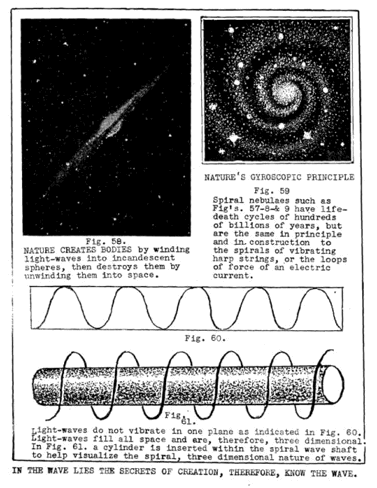

LESSON NUMBER 27 PREFACE¶
We have now reached the stage where the new idea given in Lesson 11 can be enlarged upon to vastly aid you in removing all limitations from your life by making you KNOW how you can build it to any heights of power you desire without being handicapped by the lack of knowledge from which doubts, fears, pessimism and other negative effects retard your growth. Please re-study lesson No. 11 from page 180 and build this lesson upon it.
All science text books contain a universally accepted law which is printed on page 183 of Lesson No. 11, which is as follows: “Action and reaction are equal and opposite.”
On the same page that idea is amplified by explaining that action and reaction are simultaneous in their expression. It states that they are then repeated sequentially.
On page 180 there is a quotation from The Divine Iliad which is God’s assurance that whatever you desire will not only be granted to you but is already yours, and always has been, but you have not yet known it.
That is the trouble with us. We do not know our power. Proof of this lies in the fact that we have used not more than two percent of our power at this early stage of man’s unfolding.
Bearing in mind the statements on pages 180-1-2-3, and assuming that you fully comprehend them, we shall now modify the above law by clothing it in other words as follows: EVERY ACTION IS ITS OWN REACTION. This means that when you perform any action you have already created its equal and opposite reaction.
Actions are necessary to give physical bodies to Mind desires. The DESIRE must precede the action but the thought-body of a Mind desire can never have a physical body without being followed by physical action. If your action is in balance with your desire the reaction will also be.
Likewise, if your desire is of majestic measure, and your action is in the measure of your desire you will produce a material body of majestic measure. You cannot help doing so for the reaction of your action is as certain to be the image of your desire as that day follows night.
If you have allowed this idea to sink into your Soul until you KNOW it–not just BELIEVE it–you will now be ready to comprehend another modification of this wonderful promise of our Father-Mother, now following. EVERY DESIRE OF MIND IS ALREADY FULFILLED.
When you actually know this you are equipped for any achievement whatsoever which is within Universal Law. KNOWING this within your Soul strips you of any limitations whatsoever. When you desire to accomplish anything you will start doing it at once with knowledge that you can complete it, for you will learn how to do it in the doing of it.
The lesson that you should learn from this coupled with Lesson No. 11 is that your desires and your actions should be POSITIVE. They must express the life principle. The slightest negative note in your desire lessens it–negates it.
If your knowledge is strong your desire can be without measure. If your desire is to remove mountains the mountains will be moved, but the slightest doubt, or fear, or the picturing of insurmountable hurdles, or pessimism arising from past failures, or hesitating because of lack of money, or any other species of doubt whatsoever, means that the negation of your desire lessens the measure of your POSITIVE DESIRE WHICH IS BASED UPON KNOWING. As God’s law is absolute you cannot possibly evade distorting the pattern of your desire by doubting the certainty of its fulfillment.
When you have arrived at this stage of your knowing you will have no desire which is for Self alone. That would be impossible. When you have become fully aware of your Cosmic Self your very nature will be cosmic. Your desires will be for the WHOLE, like unto our Father-Mother’s desires. And as our Creator’s creations are like unto His balanced desires, for the WHOLE and never for a part, so will your creations be balanced like unto His.
The more you fully comprehend the infinitely multiplied power you are bestowing upon yourself by losing your personal ego in your newly found UNIVERSALITY the more you can discard past ages of body sensing and glory in the ecstasy of your KNOWING.
The greatest mystics of all time have tried to give you this secret of their own power in such words as: “He that findeth his life shall lose it: and he that loseth his life for My sake shall find it” but their meanings have not been understood.
Not until the coming of Cosmic Man could these teachings of Cosmic Conscious Messengers be even faintly understood.
These things I know–and I know also that you cannot rise to the great heights of your own Omnipotence until you know the true relationship which exists between The Light which Mind is and the two-lights which bodies are.
Bear with me, therefore, for your own sake, when I tell you in great detail, about such seemingly unimportant things as the vibration of a harp string. As every effect of motion in the universe has the same basic foundation in The Divine Trinity as every other effect, it is as important that you understand the principle, which lies behind the simple vibration of a harp string which lives and dies many hundred times in one second, as that you know about the same principle in a nebula which has but one life in hundreds of billions of years.
WE COMPARE A SOUND VIBRATION WITH LIFE AND DEATH¶
To point out the sameness of principle which lies back of every effect of motion,–and of the law which governs the making of material bodies from conceived thought-bodies–and of the principle of desire which is already fulfilled at the moment of concentration upon desire–and the sequential fulfillment by the action of giving your desire a material body–we will continue to amplify the above by still continuing to use the example of the desire to give a material body, to the musical tone of a silent harp string.
Let us, therefore, build the body of the idea of a musical tone, step by step, and as we build it let us fix within our Consciousness the fact that we build all other bodies in exactly the same manner. That manner is God’s way of doing it and there is no other way–no variation of the process whatsoever, whether it be a solar system built by God, or a top which a boy builds for spinning, or an industry built by man.
First comes desire of Mind. Desire is timeless. Desire of Mind to create comes like a flash of inspired Light from knowing Mind. Desire to create always means a desire to give out from the centering Soul. Desire to create is spiritual and a spiritual creation always gives out from a centering point of Omniscient, Omnipotent Light.
Do not confuse the spiritual desire to create bodies with the physical desire to TAKE something to continue the growth of a creating body. Desires of the senses for the survival of sensed bodies is the process of lawfully receiving that which is regiven, or of unlawfully taking it for self alone.
Desire of Mind to conceive an idea of Mind is immediately fulfilled, for every separate idea is a part of God’s One Whole Idea. Therefore you KNOW that your desire is already fulfilled as a mental conception because the WHOLE IDEA of which your idea is a part, is already existent in the undivided universe of Mind.
You now divide the idea by setting your concept in motion. To set it in motion is to THINK it. To think it is to separate what you want from the WHOLE. You do not desire the WHOLE,–you want only a part of the WHOLE. All you want, and have asked for, is to produce a musical note from the stillness of the whole universe by building a body of sound for senses to hear with outer ears and Souls to hear with inner ears.
The moment you extend what you KNOW to your electric servant which THINKS what you know into thought forms you begin the WORK of building a body for your desire. Remember always that God works WITH you and not FOR you. You are a unit of His Creation. Your Soul is God’s Soul. Your hands are God’s hands. To the extent of your awareness of this fact you are either manifesting God by being UNIVERSAL MAN and UNIVERSAL SOUL, or just manifesting your own sensed body. Whichever you are shows in your work. The thought-imaged bodies you create in your imaginings have in them YOUR IMMORTALITY or YOUR MORTALITY.
Your concept now has a pattern–a thought-pattern which is a thought-body. It is like the formless seed of a rose from which the full blown flower unfolds. You must now give your idea a material body, and that can be done only through action.
Again we say your desire has already been fulfilled, for that which you have desired already stands before you. God has created it for you by creating His own body. It is already existent, awaiting you. But you must reach forth and receive that which He has given you to fulfill your desire for “thy desire shall not walk thy way to thee unaided by thy strong arms”, is stated in The Message.
Now comes the necessity for bodily action. You reach forth for the material to make your harp string. From now on the more you will keep before you a realization that EACH ACTION IS ITS OWN REACTION the easier becomes your task of building a body for your musical tone or for the moving of a mountain.
A light projected into a mirror is regiven from the mirror, and all matter is a mirror reflecting its units into each other.
The recoil of a gun is the simultaneous reaction to its explosive action. A powerful discharge has a powerful recoil. Powerful thoughts of men likewise bring powerful reactions.
Every reflection, or reaction is in reverse of its action, for it is by the simultaneous action-reactions of desire that the universal equilibrium is divided.
Just as you could not polarize one and of a magnet without polarizing the other end simultaneously, you cannot perform any action which divides the undivided without creating both the action and its reaction simultaneously.
To walk you must divide your balance. You lose it to find it for again losing it–but that which you have lost is always awaiting you, for you created both action and reaction simultaneously. That which you have lost is already thine. “All down the ages it has been thine without thy knowing e’en though thou hast but just asked for it.” You may walk to the ends of the earth with God, without Him you can do nothing. He will not do it FOR you WITHOUT you.
That is what I mean by working knowingly with God. He has prepared the way for you. He has made the path for you up your own mountain but you must work with Him for the fulfillment of your desire to reach your mountain top. The first step motivates you for the next step by reborning desire in you for the next step.
And so it is you put the material together, action by action given, and reaction by reaction regiven, until you have created a body for your harp and a string for the tone you desire.
There it is. You can now see it and feel it–but all down the aeons it has always been there awaiting your DESIRE followed by your ACTION to bring it into seeming being. Do you realize this fact? If you do you can KNOW that anything else which you wish to bring into seeming being by giving it a transient body is within your limitless power.
There is your harp with one string on it of the tone you desire. One string is one step toward completing all of the octaves of strings. There it is–completed–but silent.
Now you are ready to fulfill the last step of your desire, that of building a body of sound from your harp. Again we repeat the fact that that desire is already fulfilled, for you KNOW the sounds and rhythmic tones that are within the silence of those strings. You not only KNOW them but can imagine them as thought-bodies which you can hear in your imaginings with inner ears. In other words you KNOW that the sounds are there–in the silence of the undivided–awaiting your action to born their bodies to life. Until you act to give your idea a material body it will still be existent as undivided IDEA, but will not be expressed in the divided universe of moving bodies.
YOU HAVE NO LIMITATIONS UNTIL YOU SET THEM¶
Much meditation on the above thoughts will lead you to great conclusions. The fact that God will immediately grant your desire seems unbelievable. And it IS unbelievable to those who misunderstand His way of working with you. If you interpret it to mean that whatever you desire will come to you full grown and without effort on your part, then you do not understand how it is that God works WITH you and not FOR you.
If you do understand His manner of working WITH you step by step, then you must take that first step WITH Him, in order to be given the power to take the next step.
He whose desire has built a body for one harp string can become master harpist if his desires are of that measure, and then become leader of a symphony or master composer if his desire and his knowing are sufficiently intense.
If you have any limitations whatsoever you have yourself set them for yourself. The universe is infinitely extended and you are the universe.
THE UNIVERSAL BALANCE WHEEL¶
When you look up into the heavens with a high power telescope you will see many nebulae which are like, or approximately like the perfectly balanced spiral nebula which you see edgewise in Fig 58. A three quarter view of another perfectly balanced nebula of the same type is the one in Fig. 57. If you could see either of these from a direct side view it would resemble Fig. 59.
The amazing idea which I wish to convey to you is that the little swirling sound bodies which you see indicated on the amplitudes of every vibrating wave in Figs. 53-54-55 & 56 are identical in every respect, except duration and volume, with these giant nebulae of the heavens.
Our Milky Way is one of these giant nebulae. Our solar system is as a speck of dust in it. Hundreds of millions of stars constitute our Milky Way nebula, all at such vast distances from each other that the farther ones resemble milky clouds. Even from where you stand upon this little earth and look out into our nebula you see such brilliant stars as Sirius, Vega, Capella, Arcturus and hundreds like them, all separate from each other because we are close to them, a few thousand millions of miles or so (and that is quite a neighborly closeness in a nebula). The distant ones are so far that light, “traveling” at 186 400 miles per second takes millions of years to reach our planet.

Archival Plate (image050.gif)¶

Archival Plate (image051.gif)¶
It seems incredible that the little spiral “pinwheels”, which balance–and complete–every sound vibration, is the same in principle and construction as those of solar and nebular wave vibrations, but that is the amazing fact of Nature.
Nature has but one system of mechanics for “dividing the undivided”, and “conditioning the unconditioned”, and they are the same in microcosmic waves or macrocosmic ones. All matter is wound up tightly by concentrative thinking and unwound by decentrative thinking.
The journey from rest to rest and back again is always a spiral one. Centripetal force pulls inward from within to create centers of gravity, and centrifugal force thrusts outward from within to dissipate–and void–the pull of gravity.
The same forces which create the stars of the heavens create the cells of your body. For this reason what I shall tell you in the following lessons, for which I am now laying a foundation, is of vast import in knowing how to create a perfect body for yourself, a perfect business or perfect social relationship as well as to create masterpieces of perfection in whatever you give out from yourself to the world.
The more you comprehend the principle of BALANCE in Nature the more you can control it in vitalizing your own body and the products of your mind.
CONCLUSION¶
The reason we have stressed this one balanced form of the spiral nebula in the wave in the heavens and in the harp string is because that position in the wave is one of perfect polarity and perfect spherical form for all the planets of its atomic, solar or stellar systems.
The equator for every sphere in every system is the same, and every pole of rotation in every sun and planet coincides with its magnetic poles.
This whirling spiral form is the maximum of perfection in all creating systems of matter. It is the IDEAL sought for but seldom reached anywhere, either by the heavens or by man.
The heavens are as full of unbalanced pairs of opposite systems and conditions as are found within human relationships and experiences. The whole principle of it is fascinating.
The science of chemistry is based upon the combining of balanced and unbalanced conditions. The chemical elements are composed of six [three] unbalanced pairs which are separated from each other–seeking sex union with each other–and one balanced pair which have already found that union.
You will find those which have already found sex union at the amplitudes of their octave waves and each one of them will be almost as perfectly balanced as the nebulaes shown in Figs. 58 and 59–almost–but not quite.
There are nine octaves of the elements and only one of these is a fully balanced pair. That one is the element known as carbon and it is located on the amplitude of the whole nine octave cycle.
To know why a sun or solar system is dying is to know why you are dying. If I drew a diagram of this solar system would you would see how far out of balance it is as a whole.
If you are as much out of balance as this planet you would feel devitalized, or ill. Its magnetic poles are 23 degrees from the polar axis of rotation. If you let the cells of your body depolarize to that extent you would need a balance pole, or canes, to walk with.
Likewise, if you allow your business to become so unbalanced you would make very little profit, and probably face deficits.
And so it is that we must still continue to build bodies as God builds them, and build them with God to manifest Him. To do this we must KNOW–KNOW–KNOW in our hearts–we must KNOW in our Souls.
You cannot produce enduring things by following memorized formulas. You must meditate upon them in your spare moments–in your walks–while waiting for a train–or alone in your chamber. The more you thus meditate the more your Mind will KNOW, and, as a consequence, the more powerfully you will think.
There is really very little to know but it has such vast extensions that it is difficult to keep from being confused. Gradually, however, the principle of The Divine Trinity will become so much a part of you that one cloud of confusion after another will pass away until you can view the whole Cosmos as ONE WHOLE. When that day comes “all things shall be added unto you” and you shall know the glory of it.